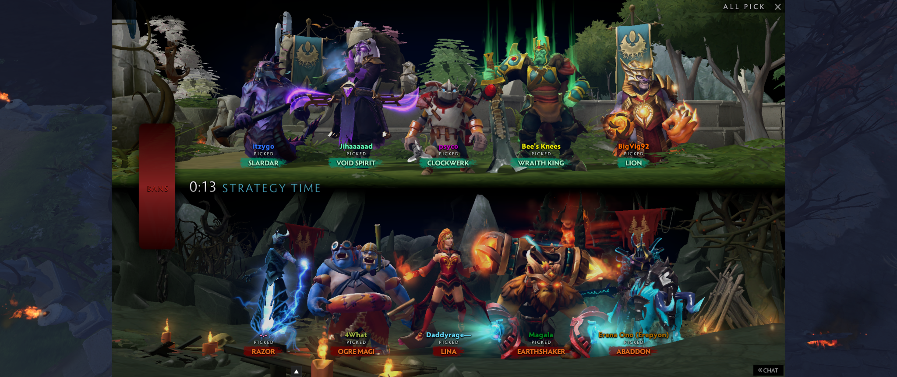
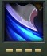
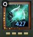

Drafting
Drafting is a process in which you and your team will strategically pick heroes that is best for your team and is best against the enemy team. As a Dota 2 beginner but also as an advanced player, it is a big challenge to create a great team that is able to counter the enemy team.
As you may know, Dota 2 is a team game, where everyone has to play specific roles according to every situation.
First, you must know what a hero does, their position in the game, what is weak against them, what is strong against them, and etc. What im trying to say is that, play a lot of games and heroes. This would make your understanding the game better hence your drafting will be better.
One example of a good draft knowledge would be that, you see that the enemy picked Medusa, which is mana reliant because of her mana shield, You can pick Outworld Destroyer or Anti Mage (they can with their abilities to burn or deplete the enemies' mana) to counter Medusa. Specific ability that counters medusa is shown here:
*the pictures are taken from the game from my computer*
In which, during the game, if done correctly, Medusa would have a hard time surviving in lane, fights, etc, as her mana will be depleted making her very vulnerable.
So you can now see that a good draft is one major factor for your team's success. That is why a player must have a good drafting experience in order to win games.
As you may know, Dota 2 is a team game, where everyone has to play specific roles according to every situation.

If I will discuss every aspect of drafting in the game, I would never finish as Dota 2 is a growing game with new updates every month. There are so much heroes and hero abilities that affect the drafting aspects. So I will just say my summarized version for the drafting. First, you must know what a hero does, their position in the game, what is weak against them, what is strong against them, and etc. What im trying to say is that, play a lot of games and heroes. This would make your understanding the game better hence your drafting will be better.
One example of a good draft knowledge would be that, you see that the enemy picked Medusa, which is mana reliant because of her mana shield, You can pick Outworld Destroyer or Anti Mage (they can with their abilities to burn or deplete the enemies' mana) to counter Medusa. Specific ability that counters medusa is shown here:

This is Anti Mage's first skill, which is a passive. 
This is Outworld Destroyer's first skill. *the pictures are taken from the game from my computer*
So you can now see that a good draft is one major factor for your team's success. That is why a player must have a good drafting experience in order to win games.
To new players:
Dota 2 is a very complex game. You would not get it in the first week you are playing it. Given that you would play everyday, you could grasp the concept of the game by a month. Only the concept but not everything. So just play more and more. There maybe days where you win games and days you lose games so just play and just strive to be better at it if you want to. Just play and play. Remember it is only a game.